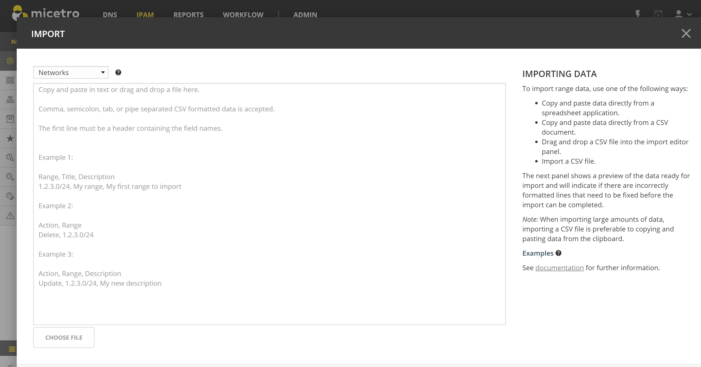

Import IPAM data
Overview
To import IP address ranges or IP addresses into Micetro, the Import wizard in Networks can be used.
The Import wizard can be used to import:
Networks
IP addresses (and DNS hosts)
Devices and interfaces
DHCP reservations
The data can either be pasted directly into the wizard or by using a file that is uploaded.
{kind=link}
Prerequisites
The user importing must have the following permissions:
Access to IPAM Module
Access to the Web Application
Access to IPAM view in Web Application
Access to “Import Data” web task
(See Permissions reference.)
Importing Data
The lines in the import text, or the contents of the file chosen, must have lines whose columns/fields are separated by either comma ,, semicolon ;, pipe | or the tab character.
For instance, when cells of a spreadsheet are highlighted and copied to the clipboard, they will be tab separated when pasted into the text area of the Import Data wizard. When importing a fair amount of lines stored in an excel spreadsheet, this is probably the easiest method of getting the data into the Import Data wizard.
Note
When choosing files, only plaintext CSV/TSV/TXT files are accepted. Excel spreadsheets need to be exported to one of these formats prior to importing.
Clearing values
When the value in a particular column is empty, it is by default not cleared. Instead it is not included in the import. This makes it possible to update certain fields and leave others as is, in the same import.
To clear values for a custom property, e.g. Responsible Person, use one of these clearing tokens instead of a blank value: $null, %clear, <none>, <blank>, or <empty>.
These tokens will only be interpreted to clear the field if field contains only the token and nothing else. For example if the field value is “This is <none>” in the import text, the field would not be cleared, but set to that value instead.
See Example 5.
Header line
The first line of the data must be the header line, containing the name of the fields in the corresponding columns of the lines after it. Some of the fields refer to built-in system fields, and are different depending on what is being imported. The rest of the fields are according to the custom properties that are defined for the object type in question. It’s only necessary to include the fields that need to be imported/updated, except for properties that are defined as mandatory, or required to be able to identify the object to import.
The field names in the header line are not case sensitive. For example, “title” will be correlated to the custom property “Title”.
Action field
In addition, there’s an optional column for “Action”, which defines whether the object specified in the line should be added, removed or modified (defaults to “Add” when not specified)
The action column is identified by one of the following fieldnames: “Action”, “Operation” or “ActionType”. If one of the custom fields defined conflicts with these names, the custom field has precedence and the column is not identified as the action column. In that case use one of the provided alternatives for the action column that does not conflict with a custom property name.
The Action field has three possible values
- Add
Default for Range Import. Create, New, and Import are equivalent alternatives.
- Update
Default for IP Address Import. Modify and Mod are equivalent alternatives.
- Delete
Remove and Del are equivalent alternatives.
Ranges
Range column:
To identify the range to import, there are three options
Include a “Range” column (alternatives: “Name”, “Network”, “Network range”, “IP range”, “IP Address range” or “IPRange”) and provide the range in CIDR format (e.g. 192.168.1.0/24) or from-to format (e.g. 192.168.1.0-192.168.1.255)
Include a “Network_address” and “Network_mask” columns, with the network address (e.g. 192.168.1.0) and network mask (e.g. 255.255.255.0) as values. This will be converted automatically to the CIDR format, and displayed in a single Range column in the next step
Include a “from” and “to” columns, with the from and to address of the range to import
The first option should be preferred. The other two options are provided for convenience when the ranges are stored across two columns in the source spreadsheet.
Built-in fields:
- Container?
Identified in header line by either “isContainer”, “is_Container” or “is Container”
If set to Yes, then the range will be marked as container, or as Range/Scope when set to “No” (or not updated if blank). See Containers for more information on the Container property.
- Locked?
Identified in header line by: “Locked”, “isLocked”, “is_Locked” or “is Locked”
If set to Yes, locks the range. No unlocks it (blank does not update). See Network Configuration for more information on Locked.
- Allow auto-assignment of IP Addresses?
Identified in the header line by: “AutoAssign”, “Auto-Assign”, “Auto_Assign” or “Auto Assign”.
Set to Yes or No to set or unset the property. Leave blank to not update. See Network Configuration for more information on Allow auto-assignment of IP Addresses.
- Reserve Network and Broadcast Address?
Identified in the header line by: “Subnet”, “isSubnet”, “is_Subnet” or “is Subnet”
Set to Yes or No to set or unset the property. Leave blank to not update. See Network Configuration for more information on Reserve Network and Broadcast Address.
- AD site
Identified in the header line by: “ADSite”, “AD Site” or “ADSiteRef”
Associates the Range with the given AD Site, provided either as the name of the AD site (if unique) or the internal reference id of the AD Site (e.g. “{#12-#1009}”). See AD Sites and Subnets for more information on this property.
Custom fields:
In addition to the built-in fields for Ranges, all the custom fields that are defined for Ranges can be populated with values.
If there is a conflict between the custom fields and the built-in fields, the custom field name will have precedence, and one of the provided alternatives will need to be used for the built-in fields.
IP addresses
IP addresses can be imported when the Import Data wizard is opened from within a particular Network, or from the Networks overview page where networks can also be imported in the same wizard.
IP Address column:
To identify which IP address to import, provide a column where the header is one of: “IP Address”, “IPAddress”, “IP”, “IP-Address” or “Name”, and provide the IP address to import in that column
Built-in fields:
- Claimed?
Identified in header line by “Claimed” and “is_Claimed”
If set to “Yes”, the IP is claimed permanently. “No” waives the claim, if claimed.
- DNS Hosts
Identified in header line by: “DNS Hosts” or “DNS Records” (plural or singular, space can be removed or replaced with “_”)
The column should be a list of fully qualified hostnames that should be added to the IP, space or comma separated, or that need to be removed from the IP. To remove specific hostnames, prefix the hostname with a hyphen “-”. To clear all DNS records from the IP, use the value “$null” or “%clear”. Otherwise, the hostnames are added to the IP, if they don’t exist already. This means these DNS records are created in the appropriate DNS Zones during the import.
Note
At this time, DHCP reservations cannot be imported as part of the IP Address import wizard.
Custom fields:
Same applies here as for Ranges; all the custom properties defined for IP addresses can be imported.
Examples
Example 1
This example creates imports two ranges, 1.2.3.0/24 and 1.2.4.0/24 with the respective titles and descriptions.
Range,Title,Description
1.2.3.0/24, My range, My first range to import
1.2.4.0/24, My range2, My second range to import
Example 2
This example creates deletes two ranges, 1.2.3.0/24 and 1.2.4.0/24.
Action,Range
Delete,1.2.3.0/24
Delete,1.2.4.0/24
Example 3
This example updates properties on the, 1.2.3.0/24 and 1.2.4.0/24. Notice how the mandatory Title column can be omitted during update, and will be left as is, whether currently empty or not.
Action,Range,Location
Update,1.2.3.0/24, US
Update,1.2.4.0/24, US
Example 4
This example updates information on two IP addresses.
IP, Responsible Person
1.2.3.10, Jon
1.2.4.11, Snow
Example 5
This example clears Responsible Person property on two IP addresses.
IP, Responsible Person
1.2.3.10, $null
1.2.4.11, $null
Example 6
This example Adds DNS records to two IP addresses, and clears from the third.
IP, DNS Hosts
1.2.3.10, hostname.company.com hostname.company2.com
1.2.4.11, -hostname2.comany.com hostname3.company.com
1.2.4.12, $null